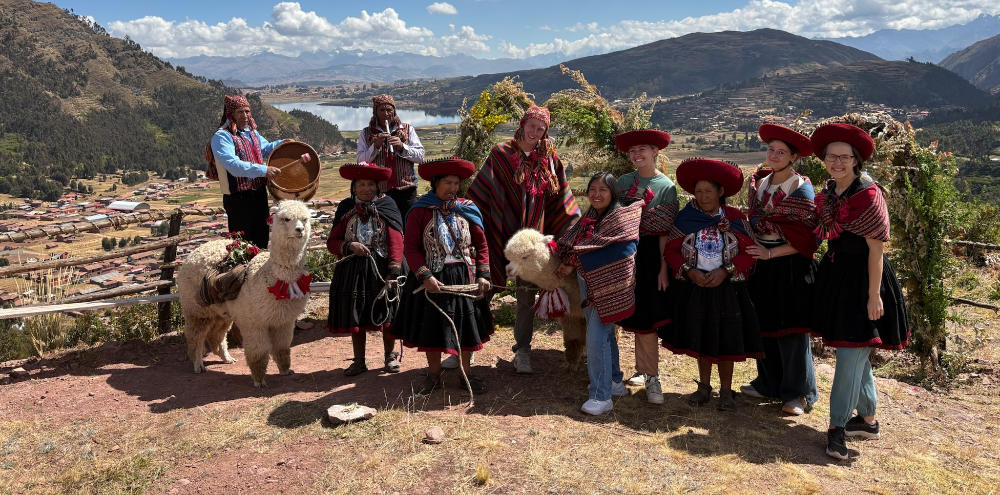
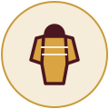
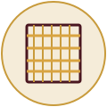
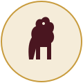

Get dressed in traditional Quechua attire, watch and take part in a hands‑on weaving demonstration, share a traditional Andean meal, and meet the sheep and llamas that are part of daily life in the highlands.
Every visit to Qosqo Away is small, hands-on, and led by local Quechua artisans in Cusco.

Put on authentic Quechua garments — ponchos, monteras, and hand-woven textiles — before your experience begins.

Watch local weavers work the loom and try your hand at traditional Andean textile techniques passed down for generations.
Share a home-style Andean meal made with local ingredients, prepared the way it's been made in Cusco families for years.

Spend time with the sheep and llamas that provide the wool used in traditional Quechua weaving.
Immerse yourself into a long tradition of Andean artisanry, led by Amandina Hjancco and supported by local artisans from her family and community. Small groups, real traditions.
Small groups, real traditions, and a welcome that feels like family.
See pricing, check availability, and book your visit directly with Amandina.